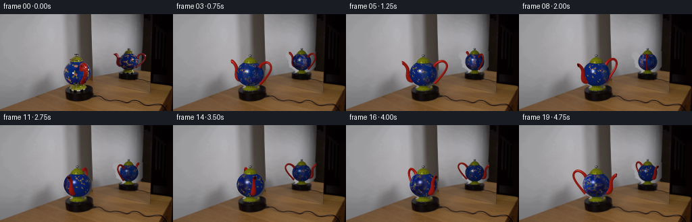
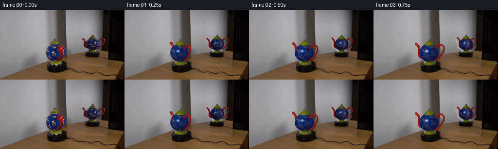
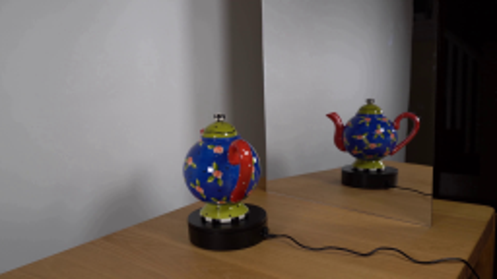
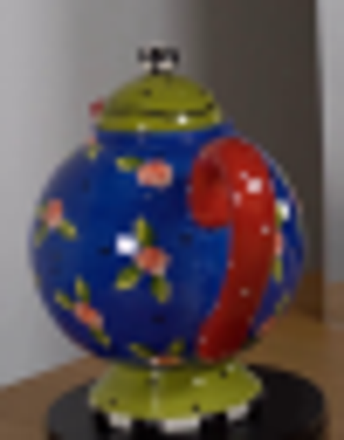
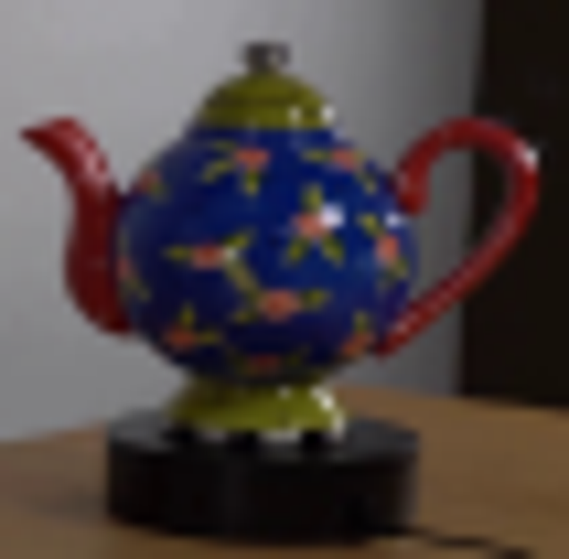
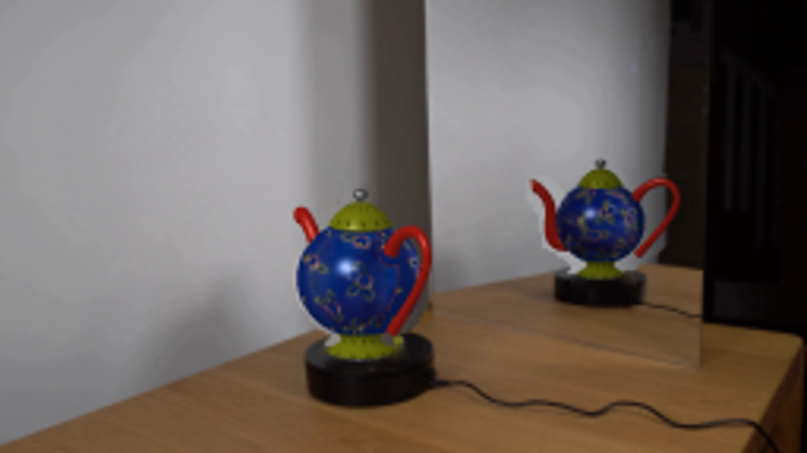
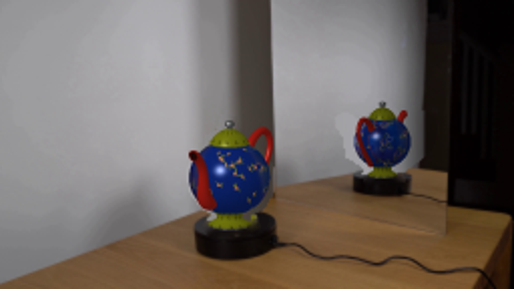
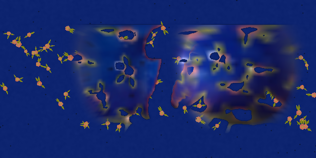
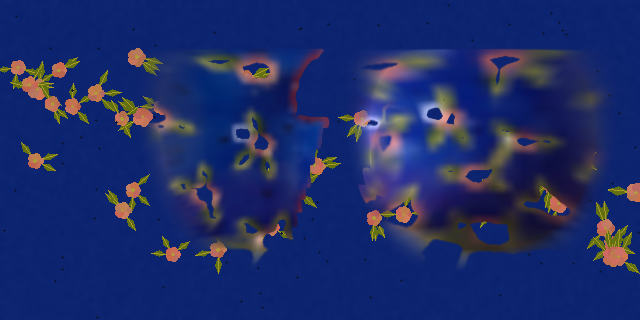
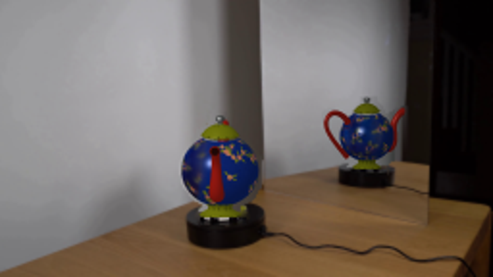

CODING AGENTS AS PIXEL WORLD MODELS
traex/GPT-6.1-Sol · 0122
点击播放 · 原生 RGB 像素
此结果可播放，但该运行尚未通过最终提交审核。页面展示不代表评测通过。
逐轮保存的候选
回放视频、检查图与代码变化。
每份候选均可单独播放。实际图片检查记录在下方工具轨迹中。
候选 01播放与检查图
点击播放 · 原生 RGB 像素

展开代码变化
--- 上一保存版本
+++ 本次保存版本
@@ -0,0 +1,223 @@
+import os
+from pathlib import Path
+import numpy as np
+import cv2
+from PIL import Image, ImageDraw
+from scipy.ndimage import gaussian_filter, map_coordinates
+from scipy.interpolate import CubicSpline
+import artifact_io
+
+ROOT=Path(__file__).resolve().parent
+IM=np.asarray(Image.open(ROOT/'first_frame.png').convert('RGB'))
+S=4
+H,W=144*S,256*S
+LIGHT=np.array([-.43,.58,.70]); LIGHT/=np.linalg.norm(LIGHT)
+VIEWS=[dict(cx=114.3,cy=88.5,s=20.1,e=.185,a=np.deg2rad(25),parity=1,gain=1.),dict(cx=190.5,cy=70.7,s=14.1,e=.15,a=np.deg2rad(91),parity=-1,gain=.78)]
+
+# Reconstruct the stationary surfaces concealed by the two objects.
+mask=np.zeros((144,256),np.uint8)
+polys=[[(111,58),(116,59),(117,64),(122,68),(123,72),(129,75),(135,84),(135,94),(130,102),(123,106),(122,109),(128,112),(126,115),(105,116),(102,112),(108,106),(101,102),(95,94),(94,85),(97,77),(103,72),(103,68),(109,65)],[(188,50),(194,50),(194,53),(197,56),(198,59),(201,61),(206,57),(211,56),(216,60),(217,65),(214,72),(208,78),(201,83),(198,85),(200,89),(183,90),(181,87),(184,84),(177,79),(173,77),(172,67),(168,62),(167,59),(172,57),(176,60),(179,65),(184,61),(186,56),(189,53)]]
+for p in polys:cv2.fillPoly(mask,[np.array(p,np.int32)],255)
+mask=cv2.dilate(mask,np.ones((3,3),np.uint8))
+bg=cv2.inpaint(IM,mask,5,cv2.INPAINT_TELEA)
+# Vertical profiles above the objects reproduce the planar wall and its edge.
+for y in range(56,110):
+ for x in range(93,136):
+ if mask[y,x] and y < 139.5-.244*x:
+ c=np.mean(IM[40:55,x].astype(float),axis=0)+(y-47)*np.array([.028,.02,.015])
+ bg[y,x]=np.clip(c,0,255)
+for y in range(50,87):
+ for x in range(167,218):
+ if mask[y,x] and y < 121-.177*x:
+ c=np.mean(IM[34:47,x].astype(float),axis=0)+(y-40)*np.array([-.08,-.08,-.08])
+ bg[y,x]=np.clip(c,0,255)
+BG=cv2.resize(bg,(W,H),interpolation=cv2.INTER_CUBIC).astype(float)
+
+# Shared ceramic ornament atlas, completed with small hand-drawn flowers in the unobserved sector.
+TW,TH=640,320
+rng=np.random.default_rng(13)
+noise=gaussian_filter(rng.normal(size=(TH,TW)),2)
+tex=np.zeros((TH,TW,3),float);tex[:]=[13,36,112];tex+=noise[:,:,None]*5
+canvas=Image.fromarray(np.uint8(np.clip(tex,0,255)))
+d=ImageDraw.Draw(canvas)
+for k in range(75):
+ x=float(rng.uniform(0,TW)); y=float(rng.uniform(52,269)); r=rng.uniform(3.2,6.2)
+ for j in range(3):
+ a=rng.uniform(0,6.28);cx=x+np.cos(a)*r*1.8;cy=y+np.sin(a)*r*1.8
+ # Small lance-shaped olive leaves.
+ vx,vy=np.cos(a),np.sin(a); px,py=-vy,vx
+ points=[(cx-vx*r,cy-vy*r),(cx+px*r*.38,cy+py*r*.38),(cx+vx*r,cy+vy*r),(cx-px*r*.38,cy-py*r*.38)]
+ d.polygon(points,fill=(100,113,18));d.line([points[0],points[2]],fill=(170,155,41),width=1)
+ for j in range(5):
+ a=j*2*np.pi/5;cx=x+np.cos(a)*r*.48;cy=y+np.sin(a)*r*.48
+ d.ellipse((cx-r*.48,cy-r*.48,cx+r*.48,cy+r*.48),fill=(179+int(rng.integers(0,30)),99+int(rng.integers(0,30)),72+int(rng.integers(0,28))))
+ d.ellipse((x-1.3,y-1.3,x+1.3,y+1.3),fill=(174,158,58))
+for k in range(100):
+ x=rng.uniform(0,TW);y=rng.uniform(0,TH);d.ellipse((x-1,y-1,x+1,y+1),fill=(10,23,60))
+tex=np.asarray(canvas).astype(float)
+uvy,uvx=np.meshgrid(np.arange(TH),np.arange(TW),indexing='ij')
+lat=uvy/(TH-1)*np.pi;lam=uvx/TW*(2*np.pi)-np.pi
+rad=np.sin(lat);py=.93*np.cos(lat)
+num=np.zeros_like(tex);den=np.zeros((TH,TW))
+for v in VIEWS:
+ a=v['a']+v['parity']*lam
+ px=rad*np.sin(a);pz=rad*np.cos(a)
+ n=np.stack([px,py/(.93**2),pz],-1);n/=np.linalg.norm(n,axis=-1)[...,None]+1e-8
+ co,si=np.cos(v['e']),np.sin(v['e'])
+ dot=n[:,:,1]*si+n[:,:,2]*co
+ sx=v['cx']+v['s']*px;sy=v['cy']-v['s']*(co*py-si*pz)
+ color=cv2.remap(IM.astype(np.float32),sx.astype('float32'),sy.astype('float32'),cv2.INTER_LINEAR,borderMode=cv2.BORDER_REFLECT)
+ red=(color[:,:,0]>color[:,:,1]*1.9)&(color[:,:,0]>color[:,:,2]*1.8)
+ valid=(dot>.20)&(abs(py)<.82)&(~red)&(color[:,:,2]>color[:,:,0]*.6)
+ # Don't bake the bright white lamp reflection into the glaze.
+ spec=(np.min(color,axis=2)>110)
+ valid &= ~spec
+ sh=.63+.37*np.maximum(0,np.sum(n*LIGHT,axis=-1))
+ weight=(dot-.2).clip(0,1)**3*valid*(1 if v['parity']==1 else .7)
+ albedo=color/(sh[:,:,None]*v['gain'])
+ num+=albedo*weight[:,:,None];den+=weight
+obs=num/np.maximum(den[:,:,None],1e-8)
+# Edge-softened confidence, while retaining the observed flower motifs.
+conf=np.clip(den*70,0,1)
+conf=gaussian_filter(conf,.9)
+tex=tex*(1-conf[:,:,None])+obs*conf[:,:,None]
+tex=np.clip(tex,0,255).astype(np.float32)
+cv2.imwrite(str(ROOT/'.tmp/texture.png'),cv2.cvtColor(tex.astype(np.uint8),cv2.COLOR_RGB2BGR))
+
+# Analytic sphere intersections and a local triangle z-buffer for the fittings.
+def project(p,v):
+ co,si=np.cos(v['e']),np.sin(v['e'])
+ return np.stack([(v['cx']+v['s']*p[:,0])*S,(v['cy']-v['s']*(co*p[:,1]-si*p[:,2]))*S,p[:,1]*si+p[:,2]*co],-1)
+def orient(p,v,theta):
+ # Parity -1 is the image reversal of a single physical object in the mirror.
+ a=theta; q=p.copy();sign=v['parity']
+ q[:,0]=sign*p[:,0]*np.cos(a)+p[:,2]*np.sin(a)
+ q[:,2]=-sign*p[:,0]*np.sin(a)+p[:,2]*np.cos(a)
+ return q
+
+def raster(img,zbuf,verts,normals,faces,v,theta,mat):
+ p=orient(verts,v,theta);n=orient(normals,v,theta);pr=project(p,v)
+ n/=np.linalg.norm(n,axis=1)[:,None]+1e-10
+ shade=.62+.38*np.maximum(n@LIGHT,0)
+ viewvec=np.array([0,np.sin(v['e']),np.cos(v['e'])]);half=(LIGHT+viewvec);half/=np.linalg.norm(half)
+ sp=np.maximum(n@half,0)**65
+ if mat=='red':
+ col=np.tile([158.,26.,18.],(len(p),1));col*=shade[:,None];col+=sp[:,None]*100
+ elif mat=='green':
+ col=np.tile([112.,117.,13.],(len(p),1));col*=shade[:,None];col+=sp[:,None]*100
+ # The gold foot and lid carry small dark dots.
+ angle=np.arctan2(verts[:,0],verts[:,2]);yy=verts[:,1]
+ dots=(np.cos(angle*12+yy*7)>.90)&(np.cos(yy*53)>.60)
+ col[dots]*=.32
+ elif mat=='rim':
+ col=np.tile([151.,142.,53.],(len(p),1))*shade[:,None]+sp[:,None]*105
+ elif mat=='metal':
+ col=np.tile([65.,67.,66.],(len(p),1))*(.3+.7*shade[:,None])+np.maximum(n@half,0)[:,None]**14*135
+ col+=np.maximum(np.cos(np.arctan2(verts[:,0],verts[:,2])*9),0)[:,None]**10*55
+ else: col=np.tile([37.,9.,8.],(len(p),1))*shade[:,None]
+ col*=v['gain']
+ for f in faces:
+ tri=pr[f];c=col[f]
+ x0=max(0,int(np.floor(tri[:,0].min())));x1=min(W-1,int(np.ceil(tri[:,0].max())))
+ y0=max(0,int(np.floor(tri[:,1].min())));y1=min(H-1,int(np.ceil(tri[:,1].max())))
+ if x1<x0 or y1<y0:continue
+ ax,ay=tri[0,:2];bx,by=tri[1,:2];cx,cy=tri[2,:2]
+ det=(by-cy)*(ax-cx)+(cx-bx)*(ay-cy)
+ if abs(det)<1e-7:continue
+ yy,xx=np.mgrid[y0:y1+1,x0:x1+1];xx=xx+.5;yy=yy+.5
+ u=((by-cy)*(xx-cx)+(cx-bx)*(yy-cy))/det
+ w=((cy-ay)*(xx-cx)+(ax-cx)*(yy-cy))/det
+ t=1-u-w
+ z=u*tri[0,2]+w*tri[1,2]+t*tri[2,2]
+ old=zbuf[y0:y1+1,x0:x1+1]
+ valid=(u>=-1e-6)&(w>=-1e-6)&(t>=-1e-6)&(z>old)
+ if not np.any(valid):continue
+ patch=img[y0:y1+1,x0:x1+1];val=u[:,:,None]*c[0]+w[:,:,None]*c[1]+t[:,:,None]*c[2]
+ patch[valid]=val[valid];old[valid]=z[valid]
+
+
+def lathe(profile,steps=80):
+ p=np.array(profile,float);v=[]
+ for y,r in p:
+ a=np.arange(steps)*2*np.pi/steps
+ v.extend(np.stack([r*np.sin(a),np.full(steps,y),r*np.cos(a)],1))
+ v=np.array(v); n=np.zeros_like(v)
+ for i in range(len(p)):
+ lo=max(0,i-1);hi=min(len(p)-1,i+1);dy=p[hi,0]-p[lo,0];dr=p[hi,1]-p[lo,1]
+ a=np.arange(steps)*2*np.pi/steps
+ n[i*steps:(i+1)*steps]=np.stack([np.sin(a)*dy,np.full(steps,-dr),np.cos(a)*dy],1)
+ f=[]
+ for i in range(len(p)-1):
+ for j in range(steps):
+ a=i*steps+j;b=i*steps+(j+1)%steps;c=(i+1)*steps+j;dd=(i+1)*steps+(j+1)%steps
+ f.extend([[a,b,c],[b,dd,c]])
+ return v,n,np.array(f)
+
+def tube(points,rs,side=1,segments=60,ring=16):
+ pts=np.array(points,float);t=np.linspace(0,1,len(pts));tt=np.linspace(0,1,segments)
+ path=CubicSpline(t,pts)(tt);tang=CubicSpline(t,pts)(tt,1);rad=CubicSpline(t,rs)(tt)
+ vv=[];nn=[]
+ for (r,y),(tr,ty),radius in zip(path,tang,rad):
+ tang3=np.array([0,ty,side*tr]);tang3/=np.linalg.norm(tang3)
+ b=np.array([1,0,0]);c=np.cross(tang3,b)
+ a=np.arange(ring)*2*np.pi/ring;norm=np.cos(a)[:,None]*b+np.sin(a)[:,None]*c
+ vv.extend(np.array([0,y,side*r])+radius*norm);nn.extend(norm)
+ faces=[]
+ for i in range(segments-1):
+ for j in range(ring):
+ a=i*ring+j;b=i*ring+(j+1)%ring;c=(i+1)*ring+j;d=(i+1)*ring+(j+1)%ring
+ faces.extend([[a,c,b],[b,c,d]])
+ return np.array(vv),np.array(nn),np.array(faces)
+
+fittings=[]
+fittings.append((*lathe([(.825,.44),(.85,.49),(.89,.49),(.94,.44),(1.02,.40),(1.10,.31),(1.18,.20),(1.225,.085),(1.23,.01)]),'green'))
+fittings.append((*lathe([(.843,.455),(.862,.49),(.876,.49),(.887,.47)]),'rim'))
+fittings.append((*lathe([(-1.205,.47),(-1.17,.54),(-1.11,.46),(-1.04,.33),(-.96,.30),(-.89,.35)]),'green'))
+fittings.append((*lathe([(-1.265,.36),(-1.24,.45),(-1.20,.46),(-1.187,.45)]),'metal'))
+fittings.append((*lathe([(1.21,.07),(1.29,.065),(1.31,.12),(1.39,.12),(1.425,.065)]),'metal'))
+fittings.append((*tube([(.79,.53),(1.07,.85),(1.46,.96),(1.72,.75),(1.71,.40),(1.41,-.08),(.84,-.72)],[.135,.10,.09,.078,.077,.078,.10]),'red'))
+sppts=[(.77,-.50),(1.07,-.33),(1.13,.03),(1.17,.38),(1.36,.67),(1.55,.78)]
+sprs=[.18,.19,.145,.12,.115,.145]
+fittings.append((*tube(sppts,sprs,side=-1,segments=54),'red'))
+# Dark mouth opening, surrounded by the glazed red lip.
+path=CubicSpline(np.linspace(0,1,len(sppts)),np.array(sppts,float))
+r,y=path(1.);tr,ty=path(1.,1);tang=np.array([0,ty,-tr]);tang/=np.linalg.norm(tang)
+b=np.array([1,0,0]);c=np.cross(tang,b);a=np.linspace(0,2*np.pi,32,endpoint=False)
+center=np.array([0,y,-r])+tang*.005
+mouth=np.vstack([center,center+.112*(np.cos(a)[:,None]*b+np.sin(a)[:,None]*c)])
+mn=np.tile(tang,(len(mouth),1));mf=np.array([[0,i+1,1+(i+1)%32] for i in range(32)])
+fittings.append((mouth,mn,mf,'dark'))
+
+def body(img,zbuf,v,theta):
+ s=v['s'];e=v['e'];co,si=np.cos(e),np.sin(e)
+ x0=int((v['cx']-s-1)*S);x1=int((v['cx']+s+1)*S)
+ y0=int((v['cy']-s-1)*S);y1=int((v['cy']+s+1)*S)
+ yy,xx=np.mgrid[y0:y1,x0:x1]
+ x=(xx+.5)/S-v['cx'];x/=s;u=(v['cy']-(yy+.5)/S)/s
+ h=.93;A=si*si/(h*h)+co*co;B=2*u*si*co*(1/h**2-1);C=x*x+u*u*(co*co/h**2+si*si)-1
+ disc=B*B-4*A*C;dep=(-B+np.sqrt(np.maximum(disc,0)))/(2*A)
+ y=u*co+dep*si;z=-u*si+dep*co
+ valid=(disc>0)&(y>=-.835)&(y<=.838)
+ worldang=np.arctan2(x,z);lambda0=v['parity']*(worldang-theta)
+ tx=((lambda0+np.pi)%(2*np.pi))/(2*np.pi)*TW
+ ty=np.arccos(np.clip(y/h,-1,1))/np.pi*(TH-1)
+ color=cv2.remap(tex,tx.astype(np.float32),ty.astype(np.float32),cv2.INTER_LINEAR,borderMode=cv2.BORDER_WRAP)
+ n=np.stack([x,y/h**2,z],-1);n/=np.linalg.norm(n,axis=-1)[:,:,None]+1e-10
+ shade=.63+.37*np.maximum(np.sum(n*LIGHT,axis=-1),0)
+ half=LIGHT+np.array([0,si,co]);half/=np.linalg.norm(half)
+ spec=np.maximum(np.sum(n*half,axis=-1),0)**120*170
+ # Small softened rectangular lamp highlight, fixed in the world rather than printed on the rotating pot.
+ color=color*(shade*v['gain'])[:,:,None]+spec[:,:,None]*v['gain']
+ patch=img[y0:y1,x0:x1];zb=zbuf[y0:y1,x0:x1];patch[valid]=color[valid];zb[valid]=dep[valid]
+
+frames=[IM.copy()]
+for i in range(1,20):
+ img=BG.copy();zbuf=np.full((H,W),-1e5)
+ for v in VIEWS:
+ theta=v['a']+v['parity']*np.deg2rad(48)*i/4
+ body(img,zbuf,v,theta)
+ for verts,normals,faces,mat in fittings:raster(img,zbuf,verts,normals,faces,v,theta,mat)
+ out=cv2.resize(np.clip(img,0,255).astype(np.uint8),(256,144),interpolation=cv2.INTER_AREA)
+ frames.append(out)
+ if i in [1,5,10,15,19]:Image.fromarray(out).resize((1024,576)).save(ROOT/f'.tmp/frame{i:02d}.png')
+artifact_io.save(np.stack(frames).astype(np.uint8),ROOT)
候选 02播放与检查图
点击播放 · 原生 RGB 像素


展开代码变化
--- 上一保存版本
+++ 本次保存版本
@@ -29,7 +29,10 @@
for y in range(50,87):
for x in range(167,218):
if mask[y,x] and y < 121-.177*x:
- c=np.mean(IM[34:47,x].astype(float),axis=0)+(y-40)*np.array([-.08,-.08,-.08])
+ # Match the strong vertical falloff on the mirror wall.
+ top=np.mean(IM[29:43,x].astype(float),axis=0)
+ anchor=IM[80,x].astype(float) if x<176 or x>204 else IM[81,175].astype(float)+(top-np.mean(IM[29:43,175].astype(float),axis=0))
+ c=top+(anchor-top)*np.clip((y-39)/41,0,1)
bg[y,x]=np.clip(c,0,255)
BG=cv2.resize(bg,(W,H),interpolation=cv2.INTER_CUBIC).astype(float)
@@ -40,8 +43,8 @@
tex=np.zeros((TH,TW,3),float);tex[:]=[13,36,112];tex+=noise[:,:,None]*5
canvas=Image.fromarray(np.uint8(np.clip(tex,0,255)))
d=ImageDraw.Draw(canvas)
-for k in range(75):
- x=float(rng.uniform(0,TW)); y=float(rng.uniform(52,269)); r=rng.uniform(3.2,6.2)
+for k in range(45):
+ x=float(rng.uniform(0,TW)); y=float(rng.uniform(52,269)); r=rng.uniform(7.0,10.5)
for j in range(3):
a=rng.uniform(0,6.28);cx=x+np.cos(a)*r*1.8;cy=y+np.sin(a)*r*1.8
# Small lance-shaped olive leaves.
@@ -67,7 +70,11 @@
dot=n[:,:,1]*si+n[:,:,2]*co
sx=v['cx']+v['s']*px;sy=v['cy']-v['s']*(co*py-si*pz)
color=cv2.remap(IM.astype(np.float32),sx.astype('float32'),sy.astype('float32'),cv2.INTER_LINEAR,borderMode=cv2.BORDER_REFLECT)
- red=(color[:,:,0]>color[:,:,1]*1.9)&(color[:,:,0]>color[:,:,2]*1.8)
+ red=np.zeros((TH,TW),bool)
+ if v['parity']==1:
+ hm=np.zeros((144,256),np.uint8)
+ cv2.fillPoly(hm,[np.array([(119,74),(124,71),(129,76),(130,91),(126,104),(116,106),(120,98),(124,84),(121,82),(118,84)],np.int32)],1)
+ red=cv2.remap(hm,sx.astype('float32'),sy.astype('float32'),cv2.INTER_NEAREST).astype(bool)
valid=(dot>.20)&(abs(py)<.82)&(~red)&(color[:,:,2]>color[:,:,0]*.6)
# Don't bake the bright white lamp reflection into the glaze.
spec=(np.min(color,axis=2)>110)
@@ -76,10 +83,12 @@
weight=(dot-.2).clip(0,1)**3*valid*(1 if v['parity']==1 else .7)
albedo=color/(sh[:,:,None]*v['gain'])
num+=albedo*weight[:,:,None];den+=weight
+den=gaussian_filter(den,1.0)
+num=gaussian_filter(num,(1.,1.,0))
obs=num/np.maximum(den[:,:,None],1e-8)
# Edge-softened confidence, while retaining the observed flower motifs.
conf=np.clip(den*70,0,1)
-conf=gaussian_filter(conf,.9)
+# The normalized, smoothed sample weights avoid black fringes around masked fittings.
tex=tex*(1-conf[:,:,None])+obs*conf[:,:,None]
tex=np.clip(tex,0,255).astype(np.float32)
cv2.imwrite(str(ROOT/'.tmp/texture.png'),cv2.cvtColor(tex.astype(np.uint8),cv2.COLOR_RGB2BGR))
@@ -170,8 +179,8 @@
return np.array(vv),np.array(nn),np.array(faces)
fittings=[]
-fittings.append((*lathe([(.825,.44),(.85,.49),(.89,.49),(.94,.44),(1.02,.40),(1.10,.31),(1.18,.20),(1.225,.085),(1.23,.01)]),'green'))
-fittings.append((*lathe([(.843,.455),(.862,.49),(.876,.49),(.887,.47)]),'rim'))
+fittings.append((*lathe([(.88,.44),(.91,.49),(.935,.49),(.97,.445),(1.04,.40),(1.10,.33),(1.155,.245),(1.19,.16),(1.215,.085),(1.23,.01)]),'green'))
+fittings.append((*lathe([(.90,.455),(.917,.49),(.931,.49),(.944,.47)]),'rim'))
fittings.append((*lathe([(-1.205,.47),(-1.17,.54),(-1.11,.46),(-1.04,.33),(-.96,.30),(-.89,.35)]),'green'))
fittings.append((*lathe([(-1.265,.36),(-1.24,.45),(-1.20,.46),(-1.187,.45)]),'metal'))
fittings.append((*lathe([(1.21,.07),(1.29,.065),(1.31,.12),(1.39,.12),(1.425,.065)]),'metal'))
@@ -214,10 +223,14 @@
for i in range(1,20):
img=BG.copy();zbuf=np.full((H,W),-1e5)
for v in VIEWS:
- theta=v['a']+v['parity']*np.deg2rad(48)*i/4
+ theta=v['a']+v['parity']*np.deg2rad(40)*i/4
body(img,zbuf,v,theta)
for verts,normals,faces,mat in fittings:raster(img,zbuf,verts,normals,faces,v,theta,mat)
+ img=cv2.GaussianBlur(img,(3,3),.48)
out=cv2.resize(np.clip(img,0,255).astype(np.uint8),(256,144),interpolation=cv2.INTER_AREA)
+ # Stationary motor platform and its chrome coupling.
+ out[113:117,104:128]=IM[113:117,104:128]
+ out[88:92,181:201]=IM[88:92,181:201]
frames.append(out)
if i in [1,5,10,15,19]:Image.fromarray(out).resize((1024,576)).save(ROOT/f'.tmp/frame{i:02d}.png')
artifact_io.save(np.stack(frames).astype(np.uint8),ROOT)
候选 03播放与检查图
可观测工具轨迹
实际执行的命令与返回图片。
命令 1exit 0
/bin/bash -lc "ls -la && cat prompt.txt && printf '\\n---RULES---\\n' && cat GENERATION_RULES.md"
命令 2exit 0
/bin/bash -lc "cat artifact_io.py && python - <<'PY'
from PIL import Image
im=Image.open('first_frame.png');print(im.size);im.resize((1024,576)).save('.tmp/large.png')
PY"命令 3exit 0
/bin/bash -lc "python - <<'PY'
from PIL import Image
im=Image.open('first_frame.png');im.crop((90,52,140,116)).resize((500,640)).save('.tmp/crop.png')
PY"命令 4exit 0
/bin/bash -lc "python - <<'PY' import importlib.util for m in ['numpy','scipy','cv2','PIL']:print(m,importlib.util.find_spec(m)) PY"
命令 5exit 0
/bin/bash -lc "python - <<'PY'
from PIL import Image
import numpy as np
im=np.array(Image.open('first_frame.png'))
for p in [(110,84),(114,85),(119,90),(106,92),(190,72),(190,70),(185,65),(124,84),(126,88)]:
x,y=p;print(p,im[y,x])
PY"命令 6exit 0
/bin/bash -lc "python - <<'PY'
from PIL import Image
im=Image.open('first_frame.png');im.crop((166,47,219,99)).resize((636,624)).save('.tmp/ref.png')
PY"命令 7exit 0
/bin/bash -lc "cat > generate.py <<'PY'
import os
from pathlib import Path
import numpy as np
import cv2
from PIL import Image, ImageDraw
from scipy.ndimage import gaussian_filter, map_coordinates
from scipy.interpolate import CubicSpline
import artifact_io
ROOT=Path(__file__).resolve().parent
IM=np.asarray(Image.open(ROOT/'first_frame.png').convert('RGB'))
S=4
H,W=144*S,256*S
LIGHT=np.array([-.43,.58,.70]); LIGHT/=np.linalg.norm(LIGHT)
VIEWS=[dict(cx=114.3,cy=88.5,s=20.1,e=.185,a=np.deg2rad(25),parity=1,gain=1.),dict(cx=190.5,cy=70.7,s=14.1,e=.15,a=np.deg2rad(91),parity=-1,gain=.78)]
# Reconstruct the stationary surfaces concealed by the two objects.
mask=np.zeros((144,256),np.uint8)
polys=[[(111,58),(116,59),(117,64),(122,68),(123,72),(129,75),(135,84),(135,94),(130,102),(123,106),(122,109),(128,112),(126,115),(105,116),(102,112),(108,106),(101,102),(95,94),(94,85),(97,77),(103,72),(103,68),(109,65)],[(188,50),(194,50),(194,53),(197,56),(198,59),(201,61),(206,57),(211,56),(216,60),(217,65),(214,72),(208,78),(201,83),(198,85),(200,89),(183,90),(181,87),(184,84),(177,79),(173,77),(172,67),(168,62),(167,59),(172,57),(176,60),(179,65),(184,61),(186,56),(189,53)]]
for p in polys:cv2.fillPoly(mask,[np.array(p,np.int32)],255)
mask=cv2.dilate(mask,np.ones((3,3),np.uint8))
bg=cv2.inpaint(IM,mask,5,cv2.INPAINT_TELEA)
# Vertical profiles above the objects reproduce the planar wall and its edge.
for y in range(56,110):
for x in range(93,136):
if mask[y,x] and y < 139.5-.244*x:
c=np.mean(IM[40:55,x].astype(float),axis=0)+(y-47)*np.array([.028,.02,.015])
bg[y,x]=np.clip(c,0,255)
for y in range(50,87):
for x in range(167,218):
if mask[y,x] and y < 121-.177*x:
c=np.mean(IM[34:47,x].astype(float),axis=0)+(y-40)*np.array([-.08,-.08,-.08])
bg[y,x]=np.clip(c,0,255)
BG=cv2.resize(bg,(W,H),interpolation=cv2.INTER_CUBIC).astype(float)
# Shared ceramic ornament atlas, completed with small hand-drawn flowers in the unobserved sector.
TW,TH=640,320
rng=np.random.default_rng(13)
noise=gaussian_filter(rng.normal(size=(TH,TW)),2)
tex=np.zeros((TH,TW,3),float);tex[:]=[13,36,112];tex+=noise[:,:,None]*5
canvas=Image.fromarray(np.uint8(np.clip(tex,0,255)))
d=ImageDraw.Draw(canvas)
for k in range(75):
x=float(rng.uniform(0,TW)); y=float(rng.uniform(52,269)); r=rng.uniform(3.2,6.2)
for j in range(3):
a=rng.uniform(0,6.28);cx=x+np.cos(a)*r*1.8;cy=y+np.sin(a)*r*1.8
# Small lance-shaped olive leaves.
vx,vy=np.cos(a),np.sin(a); px,py=-vy,vx
points=[(cx-vx*r,cy-vy*r),(cx+px*r*.38,cy+py*r*.38),(cx+vx*r,cy+vy*r),(cx-px*r*.38,cy-py*r*.38)]
d.polygon(points,fill=(100,113,18));d.line([points[0],points[2]],fill=(170,155,41),width=1)
for j in range(5):
a=j*2*np.pi/5;cx=x+np.cos(a)*r*.48;cy=y+np.sin(a)*r*.48
d.ellipse((cx-r*.48,cy-r*.48,cx+r*.48,cy+r*.48),fill=(179+int(rng.integers(0,30)),99+int(rng.integers(0,30)),72+int(rng.integers(0,28))))
d.ellipse((x-1.3,y-1.3,x+1.3,y+1.3),fill=(174,158,58))
for k in range(100):
x=rng.uniform(0,TW);y=rng.uniform(0,TH);d.ellipse((x-1,y-1,x+1,y+1),fill=(10,23,60))
tex=np.asarray(canvas).astype(float)
uvy,uvx=np.meshgrid(np.arange(TH),np.arange(TW),indexing='ij')
lat=uvy/(TH-1)*np.pi;lam=uvx/TW*(2*np.pi)-np.pi
rad=np.sin(lat);py=.93*np.cos(lat)
num=np.zeros_like(tex);den=np.zeros((TH,TW))
for v in VIEWS:
a=v['a']+v['parity']*lam
px=rad*np.sin(a);pz=rad*np.cos(a)
n=np.stack([px,py/(.93**2),pz],-1);n/=np.linalg.norm(n,axis=-1)[...,None]+1e-8
co,si=np.cos(v['e']),np.sin(v['e'])
dot=n[:,:,1]*si+n[:,:,2]*co
sx=v['cx']+v['s']*px;sy=v['cy']-v['s']*(co*py-si*pz)
color=cv2.remap(IM.astype(np.float32),sx.astype('float32'),sy.astype('float32'),cv2.INTER_LINEAR,borderMode=cv2.BORDER_REFLECT)
red=(color[:,:,0]>color[:,:,1]*1.9)&(color[:,:,0]>color[:,:,2]*1.8)
valid=(dot>.20)&(abs(py)<.82)&(~red)&(color[:,:,2]>color[:,:,0]*.6)
# Don't bake the bright white lamp reflection into the glaze.
spec=(np.min(color,axis=2)>110)
valid &= ~spec
sh=.63+.37*np.maximum(0,np.sum(n*LIGHT,axis=-1))
weight=(dot-.2).clip(0,1)**3*valid*(1 if v['parity']==1 else .7)
albedo=color/(sh[:,:,None]*v['gain'])
num+=albedo*weight[:,:,None];den+=weight
obs=num/np.maximum(den[:,:,None],1e-8)
# Edge-softened confidence, while retaining the observed flower motifs.
conf=np.clip(den*70,0,1)
conf=gaussian_filter(conf,.9)
tex=tex*(1-conf[:,:,None])+obs*conf[:,:,None]
tex=np.clip(tex,0,255).astype(np.float32)
cv2.imwrite(str(ROOT/'.tmp/texture.png'),cv2.cvtColor(tex.astype(np.uint8),cv2.COLOR_RGB2BGR))
# Analytic sphere intersections and a local triangle z-buffer for the fittings.
def project(p,v):
co,si=np.cos(v['e']),np.sin(v['e'])
return np.stack([(v['cx']+v['s']*p[:,0])*S,(v['cy']-v['s']*(co*p[:,1]-si*p[:,2]))*S,p[:,1]*si+p[:,2]*co],-1)
def orient(p,v,theta):
# Parity -1 is the image reversal of a single physical object in the mirror.
a=theta; q=p.copy();sign=v['parity']
q[:,0]=sign*p[:,0]*np.cos(a)+p[:,2]*np.sin(a)
q[:,2]=-sign*p[:,0]*np.sin(a)+p[:,2]*np.cos(a)
return q
def raster(img,zbuf,verts,normals,faces,v,theta,mat):
p=orient(verts,v,theta);n=orient(normals,v,theta);pr=project(p,v)
n/=np.linalg.norm(n,axis=1)[:,None]+1e-10
shade=.62+.38*np.maximum(n@LIGHT,0)
viewvec=np.array([0,np.sin(v['e']),np.cos(v['e'])]);half=(LIGHT+viewvec);half/=np.linalg.norm(half)
sp=np.maximum(n@half,0)**65
if mat=='red':
col=np.tile([158.,26.,18.],(len(p),1));col*=shade[:,None];col+=sp[:,None]*100
elif mat=='green':
col=np.tile([112.,117.,13.],(len(p),1));col*=shade[:,None];col+=sp[:,None]*100
# The gold foot and lid carry small dark dots.
angle=np.arctan2(verts[:,0],verts[:,2]);yy=verts[:,1]
dots=(np.cos(angle*12+yy*7)>.90)&(np.cos(yy*53)>.60)
col[dots]*=.32
elif mat=='rim':
col=np.tile([151.,142.,53.],(len(p),1))*shade[:,None]+sp[:,None]*105
elif mat=='metal':
col=np.tile([65.,67.,66.],(len(p),1))*(.3+.7*shade[:,None])+np.maximum(n@half,0)[:,None]**14*135
col+=np.maximum(np.cos(np.arctan2(verts[:,0],verts[:,2])*9),0)[:,None]**10*55
else: col=np.tile([37.,9.,8.],(len(p),1))*shade[:,None]
col*=v['gain']
for f in faces:
tri=pr[f];c=col[f]
x0=max(0,int(np.floor(tri[:,0].min())));x1=min(W-1,int(np.ceil(tri[:,0].max())))
y0=max(0,int(np.floor(tri[:,1].min())));y1=min(H-1,int(np.ceil(tri[:,1].max())))
if x1<x0 or y1<y0:continue
ax,ay=tri[0,:2];bx,by=tri[1,:2];cx,cy=tri[2,:2]
det=(by-cy)*(ax-cx)+(cx-bx)*(ay-cy)
if abs(det)<1e-7:continue
yy,xx=np.mgrid[y0:y1+1,x0:x1+1];xx=xx+.5;yy=yy+.5
u=((by-cy)*(xx-cx)+(cx-bx)*(yy-cy))/det
w=((cy-ay)*(xx-cx)+(ax-cx)*(yy-cy))/det
t=1-u-w
z=u*tri[0,2]+w*tri[1,2]+t*tri[2,2]
old=zbuf[y0:y1+1,x0:x1+1]
valid=(u>=-1e-6)&(w>=-1e-6)&(t>=-1e-6)&(z>old)
if not np.any(valid):continue
patch=img[y0:y1+1,x0:x1+1];val=u[:,:,None]*c[0]+w[:,:,None]*c[1]+t[:,:,None]*c[2]
patch[valid]=val[valid];old[valid]=z[valid]
def lathe(profile,steps=80):
p=np.array(profile,float);v=[]
for y,r in p:
a=np.arange(steps)*2*np.pi/steps
v.extend(np.stack([r*np.sin(a),np.full(steps,y),r*np.cos(a)],1))
v=np.array(v); n=np.zeros_like(v)
for i in range(len(p)):
lo=max(0,i-1);hi=min(len(p)-1,i+1);dy=p[hi,0]-p[lo,0];dr=p[hi,1]-p[lo,1]
a=np.arange(steps)*2*np.pi/steps
n[i*steps:(i+1)*steps]=np.stack([np.sin(a)*dy,np.full(steps,-dr),np.cos(a)*dy],1)
f=[]
for i in range(len(p)-1):
for j in range(steps):
a=i*steps+j;b=i*steps+(j+1)%steps;c=(i+1)*steps+j;dd=(i+1)*steps+(j+1)%steps
f.extend([[a,b,c],[b,dd,c]])
return v,n,np.array(f)
def tube(points,rs,side=1,segments=60,ring=16):
pts=np.array(points,float);t=np.linspace(0,1,len(pts));tt=np.linspace(0,1,segments)
path=CubicSpline(t,pts)(tt);tang=CubicSpline(t,pts)(tt,1);rad=CubicSpline(t,rs)(tt)
vv=[];nn=[]
for (r,y),(tr,ty),radius in zip(path,tang,rad):
tang3=np.array([0,ty,side*tr]);tang3/=np.linalg.norm(tang3)
b=np.array([1,0,0]);c=np.cross(tang3,b)
a=np.arange(ring)*2*np.pi/ring;norm=np.cos(a)[:,None]*b+np.sin(a)[:,None]*c
vv.extend(np.array([0,y,side*r])+radius*norm);nn.extend(norm)
faces=[]
for i in range(segments-1):
for j in range(ring):
a=i*ring+j;b=i*ring+(j+1)%ring;c=(i+1)*ring+j;d=(i+1)*ring+(j+1)%ring
faces.extend([[a,c,b],[b,c,d]])
return np.array(vv),np.array(nn),np.array(faces)
fittings=[]
fittings.append((*lathe([(.825,.44),(.85,.49),(.89,.49),(.94,.44),(1.02,.40),(1.10,.31),(1.18,.20),(1.225,.085),(1.23,.01)]),'green'))
fittings.append((*lathe([(.843,.455),(.862,.49),(.876,.49),(.887,.47)]),'rim'))
fittings.append((*lathe([(-1.205,.47),(-1.17,.54),(-1.11,.46),(-1.04,.33),(-.96,.30),(-.89,.35)]),'green'))
fittings.append((*lathe([(-1.265,.36),(-1.24,.45),(-1.20,.46),(-1.187,.45)]),'metal'))
fittings.append((*lathe([(1.21,.07),(1.29,.065),(1.31,.12),(1.39,.12),(1.425,.065)]),'metal'))
fittings.append((*tube([(.79,.53),(1.07,.85),(1.46,.96),(1.72,.75),(1.71,.40),(1.41,-.08),(.84,-.72)],[.135,.10,.09,.078,.077,.078,.10]),'red'))
sppts=[(.77,-.50),(1.07,-.33),(1.13,.03),(1.17,.38),(1.36,.67),(1.55,.78)]
sprs=[.18,.19,.145,.12,.115,.145]
fittings.append((*tube(sppts,sprs,side=-1,segments=54),'red'))
# Dark mouth opening, surrounded by the glazed red lip.
path=CubicSpline(np.linspace(0,1,len(sppts)),np.array(sppts,float))
r,y=path(1.);tr,ty=path(1.,1);tang=np.array([0,ty,-tr]);tang/=np.linalg.norm(tang)
b=np.array([1,0,0]);c=np.cross(tang,b);a=np.linspace(0,2*np.pi,32,endpoint=False)
center=np.array([0,y,-r])+tang*.005
mouth=np.vstack([center,center+.112*(np.cos(a)[:,None]*b+np.sin(a)[:,None]*c)])
mn=np.tile(tang,(len(mouth),1));mf=np.array([[0,i+1,1+(i+1)%32] for i in range(32)])
fittings.append((mouth,mn,mf,'dark'))
def body(img,zbuf,v,theta):
s=v['s'];e=v['e'];co,si=np.cos(e),np.sin(e)
x0=int((v['cx']-s-1)*S);x1=int((v['cx']+s+1)*S)
y0=int((v['cy']-s-1)*S);y1=int((v['cy']+s+1)*S)
yy,xx=np.mgrid[y0:y1,x0:x1]
x=(xx+.5)/S-v['cx'];x/=s;u=(v['cy']-(yy+.5)/S)/s
h=.93;A=si*si/(h*h)+co*co;B=2*u*si*co*(1/h**2-1);C=x*x+u*u*(co*co/h**2+si*si)-1
disc=B*B-4*A*C;dep=(-B+np.sqrt(np.maximum(disc,0)))/(2*A)
y=u*co+dep*si;z=-u*si+dep*co
valid=(disc>0)&(y>=-.835)&(y<=.838)
worldang=np.arctan2(x,z);lambda0=v['parity']*(worldang-theta)
tx=((lambda0+np.pi)%(2*np.pi))/(2*np.pi)*TW
ty=np.arccos(np.clip(y/h,-1,1))/np.pi*(TH-1)
color=cv2.remap(tex,tx.astype(np.float32),ty.astype(np.float32),cv2.INTER_LINEAR,borderMode=cv2.BORDER_WRAP)
n=np.stack([x,y/h**2,z],-1);n/=np.linalg.norm(n,axis=-1)[:,:,None]+1e-10
shade=.63+.37*np.maximum(np.sum(n*LIGHT,axis=-1),0)
half=LIGHT+np.array([0,si,co]);half/=np.linalg.norm(half)
spec=np.maximum(np.sum(n*half,axis=-1),0)**120*170
# Small softened rectangular lamp highlight, fixed in the world rather than printed on the rotating pot.
color=color*(shade*v['gain'])[:,:,None]+spec[:,:,None]*v['gain']
patch=img[y0:y1,x0:x1];zb=zbuf[y0:y1,x0:x1];patch[valid]=color[valid];zb[valid]=dep[valid]
frames=[IM.copy()]
for i in range(1,20):
img=BG.copy();zbuf=np.full((H,W),-1e5)
for v in VIEWS:
theta=v['a']+v['parity']*np.deg2rad(48)*i/4
body(img,zbuf,v,theta)
for verts,normals,faces,mat in fittings:raster(img,zbuf,verts,normals,faces,v,theta,mat)
out=cv2.resize(np.clip(img,0,255).astype(np.uint8),(256,144),interpolation=cv2.INTER_AREA)
frames.append(out)
if i in [1,5,10,15,19]:Image.fromarray(out).resize((1024,576)).save(ROOT/f'.tmp/frame{i:02d}.png')
artifact_io.save(np.stack(frames).astype(np.uint8),ROOT)
PY
OPENBLAS_NUM_THREADS=1 python generate.py"命令 8exit 0
/bin/bash -lc "python - <<'PY'
import numpy as np
from PIL import Image
im=np.array(Image.open('first_frame.png'))
for x in [95,103,120,132,167,175,185,197,205,215]:
print(x,[(y,im[y,x].tolist()) for y in [30,40,48,55,70,80,90,100]])
PY"命令 9exit 0
/bin/bash -lc "python - <<'PY'
p='generate.py'
s=open(p).read();s=s.replace('for k in range(75):','for k in range(45):').replace('r=rng.uniform(3.2,6.2)','r=rng.uniform(7.0,10.5)')
s=s.replace(\"c=np.mean(IM[34:47,x].astype(float),axis=0)+(y-40)*np.array([-.08,-.08,-.08])\", \"# Match the strong vertical falloff on the mirror wall.\\n top=np.mean(IM[29:43,x].astype(float),axis=0)\\n anchor=IM[80,x].astype(float) if x<176 or x>204 else IM[81,175].astype(float)+(top-np.mean(IM[29:43,175].astype(float),axis=0))\\n c=top+(anchor-top)*np.clip((y-39)/41,0,1)\")
s=s.replace(\"red=(color[:,:,0]>color[:,:,1]*1.9)&(color[:,:,0]>color[:,:,2]*1.8)\",\"red=np.zeros((TH,TW),bool)\\n if v['parity']==1:\\n hm=np.zeros((144,256),np.uint8)\\n cv2.fillPoly(hm,[np.array([(119,74),(124,71),(129,76),(130,91),(126,104),(116,106),(120,98),(124,84),(121,82),(118,84)],np.int32)],1)\\n red=cv2.remap(hm,sx.astype('float32'),sy.astype('float32'),cv2.INTER_NEAREST).astype(bool)\")
s=s.replace(\"obs=num/np.maximum(den[:,:,None],1e-8)\",\"den=gaussian_filter(den,1.0)\\nnum=gaussian_filter(num,(1.,1.,0))\\nobs=num/np.maximum(den[:,:,None],1e-8)\")
s=s.replace(\"conf=gaussian_filter(conf,.9)\",\"# The normalized, smoothed sample weights avoid black fringes around masked fittings.\")
s=s.replace(\"(.825,.44),(.85,.49),(.89,.49),(.94,.44),(1.02,.40),(1.10,.31),(1.18,.20),(1.225,.085),(1.23,.01)\",\"(.88,.44),(.91,.49),(.935,.49),(.97,.445),(1.04,.40),(1.10,.33),(1.155,.245),(1.19,.16),(1.215,.085),(1.23,.01)\")
s=s.replace(\"(.843,.455),(.862,.49),(.876,.49),(.887,.47)\",\"(.90,.455),(.917,.49),(.931,.49),(.944,.47)\")
s=s.replace(\"theta=v['a']+v['parity']*np.deg2rad(48)*i/4\", \"theta=v['a']+v['parity']*np.deg2rad(40)*i/4\")
# Protect the stationary silver base under the rotating ceramic foot.
s=s.replace(\"out=cv2.resize\", \"img=cv2.GaussianBlur(img,(3,3),.48)\\n out=cv2.resize\")
s=s.replace(\"frames.append(out)\",\"# Stationary motor platform and its chrome coupling.\\n out[113:117,104:128]=IM[113:117,104:128]\\n out[88:92,181:201]=IM[88:92,181:201]\\n frames.append(out)\")
open(p,'w').write(s)
PY
OPENBLAS_NUM_THREADS=1 python generate.py"视觉工具实际返回图片 1

视觉工具实际返回图片 2

视觉工具实际返回图片 3

视觉工具实际返回图片 4

视觉工具实际返回图片 5

视觉工具实际返回图片 6

视觉工具实际返回图片 7

视觉工具实际返回图片 8
视觉工具实际返回图片 9

视觉工具实际返回图片 10

保存候选 3 份；完成命令 9 次；可验证图片返回 10 张。原始 API 响应与完整日志保留在本地。